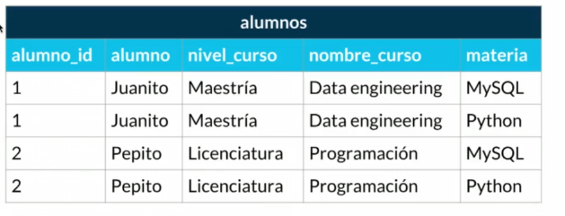
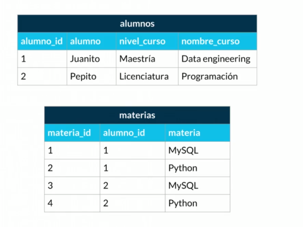
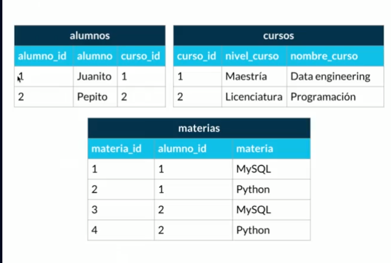
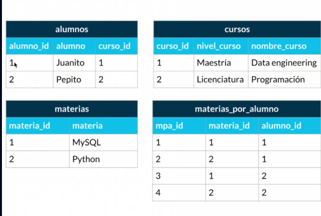

Entidades -> son las clases que se utilizan para representar datos atibutos -> multivaluados -> tiene màs de un valor, compuest _> que se compone de màs atributos key -> es un atributo que identifica a una entidad foreign key -> es un atributo que identifica a una entidad que está en otra tabla
Cardinalidad: 1 a 1 : una entidad tiene una entidad 1:1
cardinalidad de 0 a 1 : una entidad puede tener 0 o 1 entidad(uno a uno opcional)
cardinalidad de 1 a N: una entidad puede tener 1 o N entidades(uno a muchos opcional)
cardinalidad de 0 a N: una entidad puede tener 0 o N entidades
cardinalidad de N a N: una entidad puede tener N entidades
Perteneen a las 12 reglas de cod, normalizar la base de datos quiere decir separa los componenetes de la base de dato acorde a las reglas de coud
sin normalizar
Promera Forma normal: atributoa atemoicos no se puede tener campos repetidos
Segunda FOrma Normal: estar en la 1er forma normal y el campo de la tabla debe tener una clave ùnica
CUmplir 1fn y sengunda fn y qyue los campos que NO son clave NO deben tener dependencias
Cuarta forma normal cumple normas anteriores y que los campo multivaluados se identifican por una clave única
ConsideracionCuando la relaci+on de uno a mucho la clave foranea(foreing key) va en muchos
Relational Database Mangment System: Es un programa que se encarga de cumplir las reglas de coud y manejorar las bases de datos relacionales, ejemplos: MySQL, PostgreSQL, SQLite, SQL Server, Oracle, etc.
database: schemas, repositorio de datos; table: entidades; view: proyección de los datos en una vista
CREATE DATABASE test_db; -> crea una base de datos llamada test_db
USE test_db; -> seleciona la base de datos test_db y lo siguientes queries serán aplicadas sobre esa base de datos
CREATE TABLE test_db.people ( person_id int not null auto_increment, last_name varchar(255), first_name varchar(255), address varchar(255), city varchar(255), ); -> crea una tabla con los campos person_id, last_name, first_name, address, city
CREATE_VIEW v_brasil_customers AS SELECT customer_name, contact_name FROM customers WHERE country = "Brasil"; -> crea una vista llamada v_brasil_customers que contiene los campos customer_name y contact_name de la tabla customers donde country es igual a Brasil
ALTER TABLE people ADD date_of_birth date; -> agrega un campo date_of_birth a la tabla people
ALTER TABLE people ALTER COLUMN date_of_birth year; -> agrera un campo date_of_birth a la tabla people de tipo año
ALTER TABLE people DROP COLUMN date_of_birth; -> elimina el campo date_of_birth de la tabla people
Se debe de usar USE "NOMBRE_DB"
DROP TABLE -> Elimina la table people
DROP DATABASE -> Elimina la base de datos test_db
Inserta un unevo registro a la base de datos
INSERT INTO people (last_name, first_name, address, city) VALUES ('Henandez', 'Laura', 'Calle 12', 'Oxapampa'
Consideraciones: mantener el orden de las cabeceras al insertar los values
Actualizar datos que ya se tienen
UPDATE people SET last_name = 'Chavez', city= 'La Merced' WHERE person_id = 1;
UPDATE people SET first_name= 'Cesar' WHERE city = 'Oxapampa';
UPDATE people SET city = 'Villa Rica'; (peligro)
Eliminar datos que ya se tienen en una tabla
WHERE person_id = 1;
DELETE FROM people;
Seleccionar datos de una tabla
SELECT first_name, last_name FROM people;